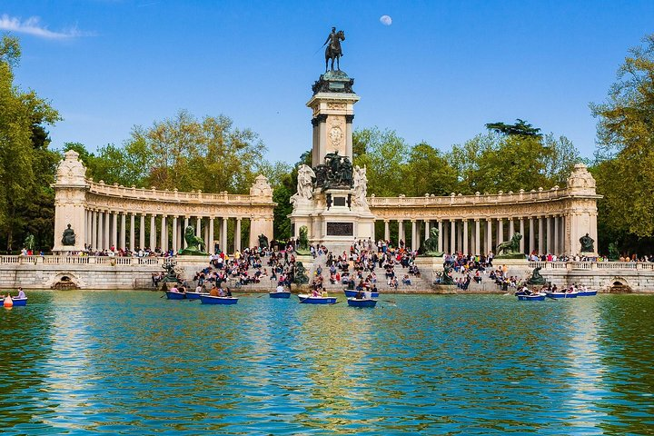

1. La Valette, Malte
Découvrez La Valette, la capitale fortifiée de Malte, un joyau méditerranéen où l'histoire rencontre le soleil.

2. Madrid, Espagne
Plongez dans l'effervescence de Madrid, une capitale espagnole vibrante d'énergie.


3. Stuttgart, Allemagne
Explorez Stuttgart, une ville allemande moderne et verdoyante, connue pour son ingénierie automobile (Porsche, Mercedes-Benz) et ses musées fascinants.

4. Rome, Italie
Rome, la 'Ville Éternelle', vous enveloppe de sa grandeur historique, où chaque pas est une rencontre avec des siècles de civilisation et des saveurs inoubliables.
5. Londres, Angleterre
Dynamique et cosmopolite, Londres est un carrefour culturel où l'histoire royale côtoie une modernité effervescente, offrant une infinité de découvertes à chaque visite.